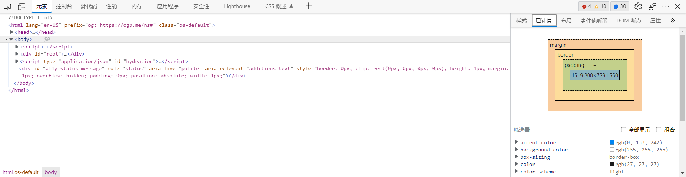

CSS盒模型
此为 MDN web docs 的学习笔记。
简述
在CSS中，一切都是盒子。下面就是一个盒子套盒子的模型。MS Edge上Ctrl+Shift+I打开开发者工具也可以看到网页的“盒子布局”（后面会看到）。

盒子分成两类：block 和 inline。block类型的盒子在网页中会单独成一行；而inline则不是。
一个盒子，作为一个整体，它在网页中会有一个布局(layout)；同时，盒子内部的内容也会有自己的布局。上面的两种布局分别被叫做 Outer display type 和 Inner display type两种。
Outer display type
Outer display type 决定了盒子作为一个整体将如何在页面中表现。
Inner display type
Inner display type 决定了盒子内部的元素如何排版。在默认情况下，盒子中的元素是以 normal folw的形式排版的。
可以通过 display: flex; 将盒子本身以及盒子的所有直接孩子的 inner display type 改成 flex，也就是说可以随着屏幕大小而变化。 display 的值还可以设置成下列值：
gridblockinlineinline-flex
<span>元素是一个常用的无语义的 inline 类型的盒子；<div> 是一个常用的无语义的 block 类型的盒子。可以通过CSS设置 display 属性的值来修改它们的 display type。
盒模型(box model)
如顶端图，盒模型中的盒子分成
- Content box：可以用 inline-size, block-size, width, height 修饰；
- Padding box：文字周围的空白；
- Border box：padding box 的边框；
- Margin box：padding 之外的空白区域。
可以使用开发者工具检查网页的盒模型。在MS Edge中，Ctrl+Shifi+I 组合键可打开开发者工具。

Margin（页边距）
设置margin值可以用下列两种方式：
margin: 10pxmargin-top: 10px
第一种方式会同时设置上下左右的margin值，叫做shorthand；第二种方式可以分别设置四边的margin值，叫做longhand。
margin的longhand是以下四个：
- margin-top
- margin-right
- margin-bottom
- margin-left
注意：margin的值可以是负数；其单位可以是 px, em 等等。
Margin相互重合时的表现
- 如果两个Margin的值都是正数，则取Margin的最大值
- 如果两个Margin的值都是负数，则取Margin的最小值（离0最远的值）
- 如果一正一负，则取二者相减后的值
Border（边框）
每一个Border都可以设置其 style, color, width.
style设置的是线型，有solid, dotted, dashed, double;
color设置的就是颜色。可以将其属性值设置为内置颜色如red；也可以使用rgba格式设置颜色。
width设置的是边框的粗细，可以用px作为单位。
下面是两个例子：
1 | border: 5px dotted red |
1 | border: 5px dotted rgba(1,1,1,0.1) |
上面用到是shorthand，所以是将四个border的属性都设置成了同一个值。如果想要分别定制border的四个边框，可以用下列属性：
- border-top
- border-right
- border-bottom
- border-left
来分别制定border四边的样式
Padding（内容与border之间的距离）
Padding是不可以取负值的。并且，任何背景都会显示在padding图层之下。
类似地，可以用CSSpadding: 10px 同时设置四边的padding。
也可以用padding-top padding-right padding-bottom padding-left 分别设置四个边。
Alternative box model
使用 box-sizing: border-box; 可以使得 width 和 height 属性只控制border方框的大小。这种用法更常见。
Inline box model and inline boxes
对于 display属性是inline的元素而言，CSS的width和height属性将会失效；